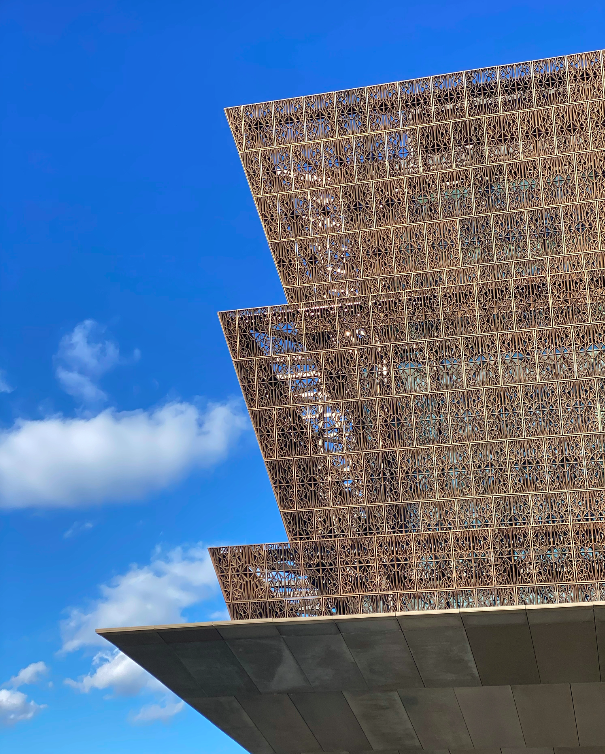

There is probably no city as intimidating as Washington, D.C. At the center of the city lies the National Mall, lined with monuments to U.S. presidents and memorials to soldiers
lost in war. All American power is clustered near the Mall — Congress, the White House and the Supreme Court all lie within mere blocks of each other. But as intimidating as DC is designed to be, it is also a fun, young and
driven city. Included below are some recommendations on where to stay, eat and drink (no city I've ever been to has as much of an entrenched happy hour culture), as well as my recommendations for DC's top 10 museums.
Hope this helps you plan your trip to the capital!
Another smash-hit from Chef José Andres, Zaytinya is good any time of day. Pair any meal with an excellent Greek champagne or cocktail from the exhaustive drinks list.
A longtime favorite of presidents and ambassadors, Rasika is one of the most quintessential DC restaurants. Perfect for a pre-theater meal, a special occasion or a fancy weeknight dinner.
The bagels at Call Your Mother might well give New Yorkers a run for their money. With lines wrapping around the block on Saturday mornings, Call Your Mother is a DC breakfast staple.
If there was ever an essential DC cocktail bar, it would be José Andres' barmini. With an expertly-crafted menu and an eclectic interior, barmini is an essential stop on any DC trip.
Stepping into Bar Pilar is like stepping into another era. The bar's Hemmingway-inspired menu transports you to an underground, intellectual, turn-of-the-century version of the capital.
The Gibson looks like what DC should be. Stop by the Gibson, with its par-none drinks and speakeasy vibe, after dinner to feel like a West Wing power player.
Steeped in prestige and scandal, the Watergate is a veritable Washington, D.C. landmark. Recently updated, the Watergate is the epitome of Georgetown: classic, elegant and luxurious.
Standing shoulder-to-shoulder with the White House, the Hay-Adams, unrivaled in its Washington prestige, is about as close as you can get to the seat of power in the United States without a presidential invite.
Located on the Washington Channel, Intercontinental the Wharf is steps from up-and-coming bars and restaurants, making it the perfect stay for a fun, unfussy DC experience.

National Museum of African American History
BEST MUSEUMS IN THE CAPITAL
National Museum of African-American History and Culture
National Air & Space Museum
National Museum of Natural History
Hirshhorn Museum & Sculpture Garden
Freer Gallery of Art and Arthur M. Sackler Gallery
United States Holocaust Memorial Museum
Smithsonian American Art Museum/National Portrait Gallery